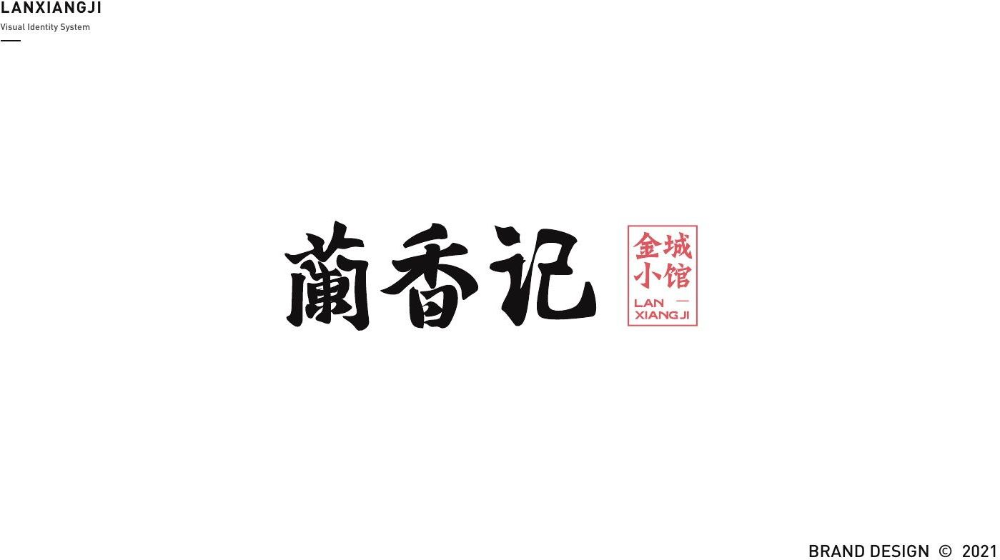
- 年份
- 2021
- 品类
- 面馆
- 做了什么
01 / 思路
同一家店，两种讲法
兰香记做了两稿。第一稿用一位拉面师傅当主角，第二稿换成细线字标和山水插画。
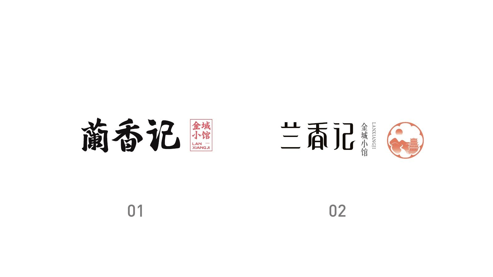
02 / 系统
第一稿：书法字和拉面师傅
第一稿把书法写的“蘭香記”和拉面师傅放在一起，师傅有拉面、甩面的几组动作。色彩是米灰、黑、红、白四色。
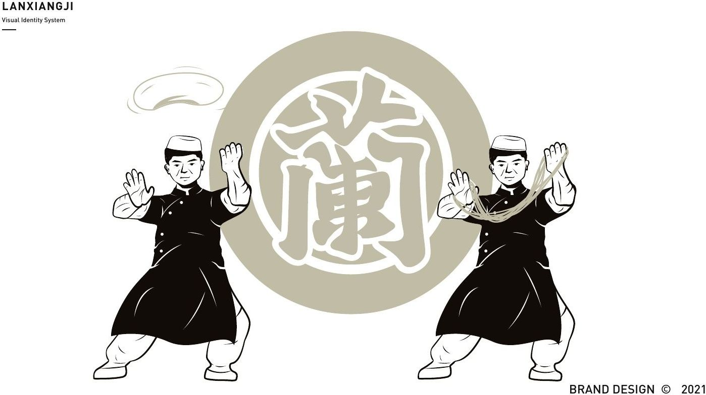

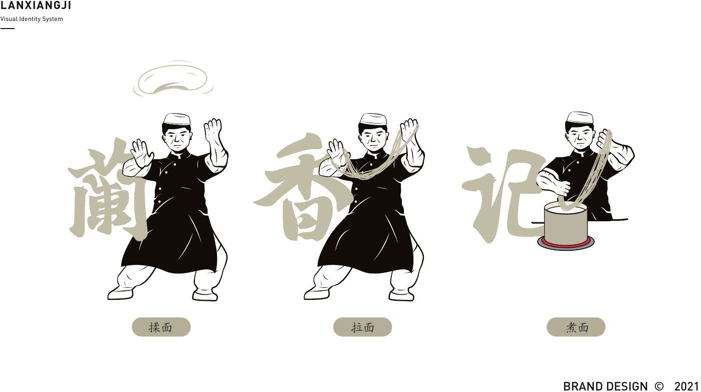
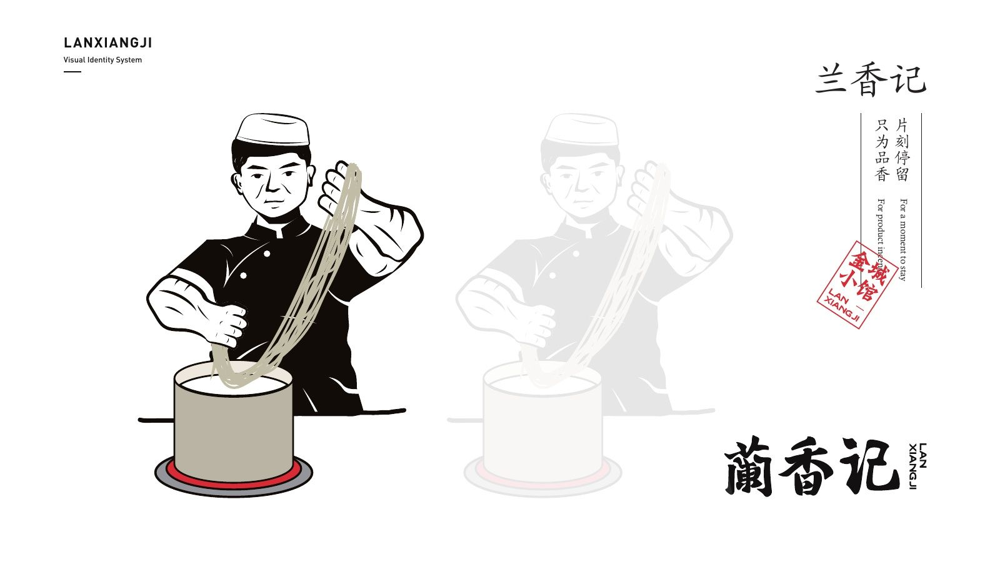
03 / 系统
第二稿：细线字标和山水插画
第二稿的字标改用细线，旁边竖排“金城小馆”，配一枚圆形图章；色彩换成橙、蓝、绿、黑；插画里是远山、楼阁、鹿和飞鸟。
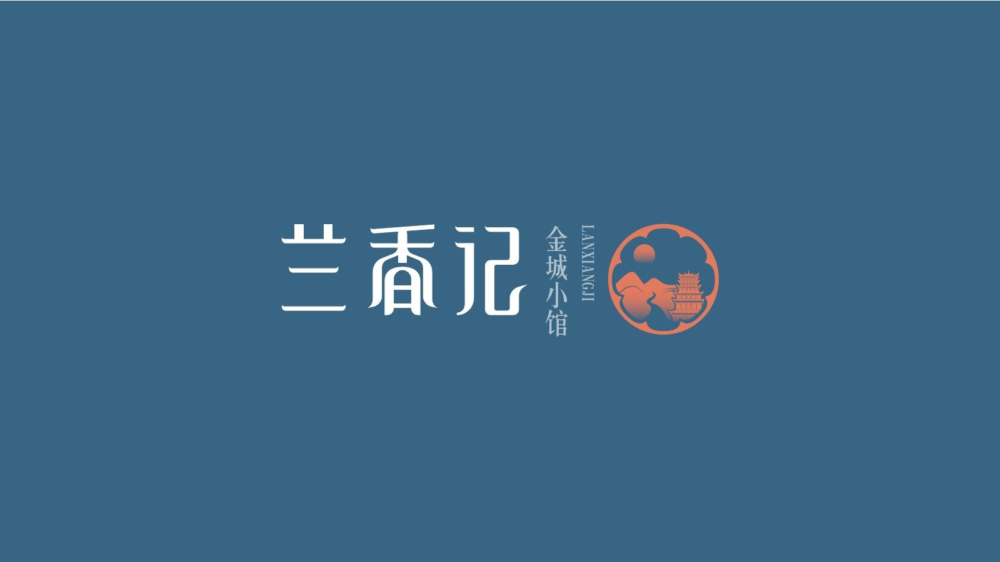
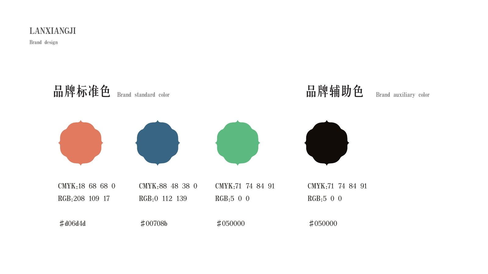
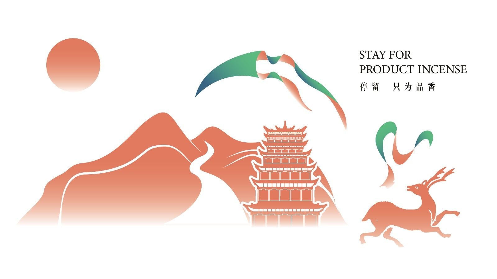
04 / 落地
帆布袋、海报和面型卡
第一稿延展到帆布袋、店内海报和墙面海报；第二稿延展到名片、纸杯，还有一套面型卡片：韭叶子、毛细、大宽、薄宽、二细、一窝丝、荞麦棱子。
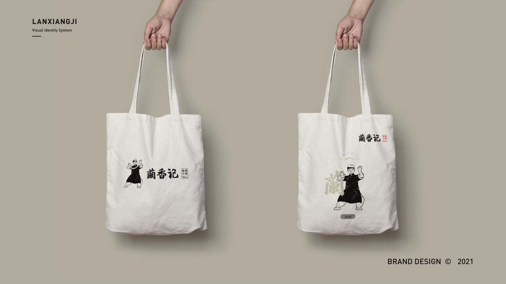
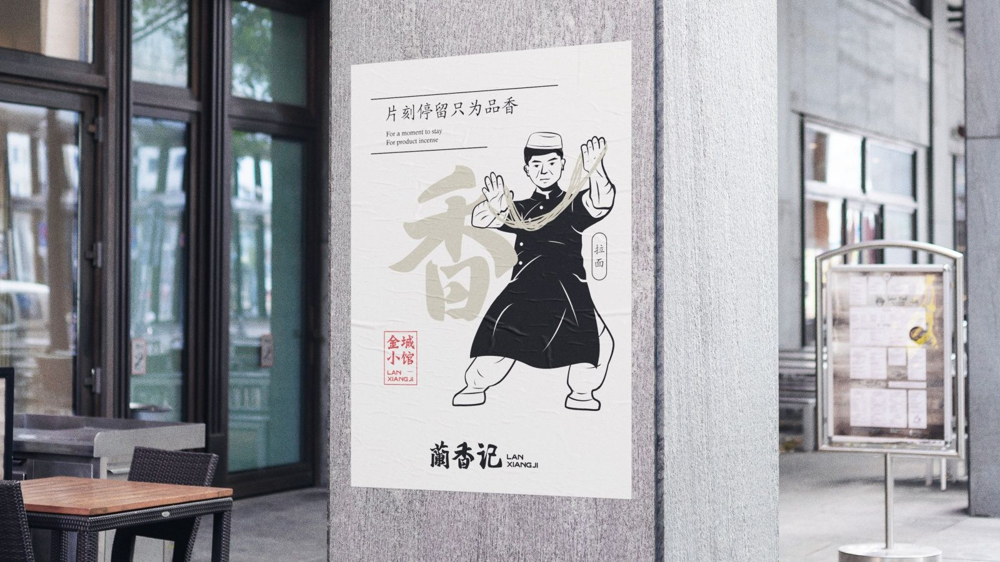
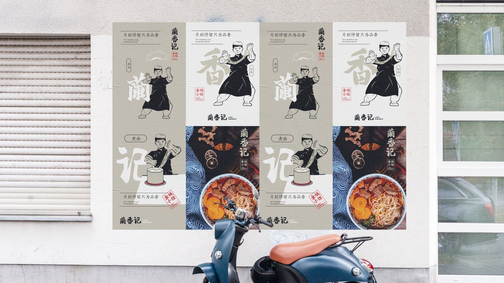
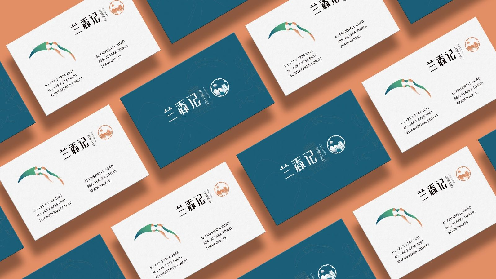
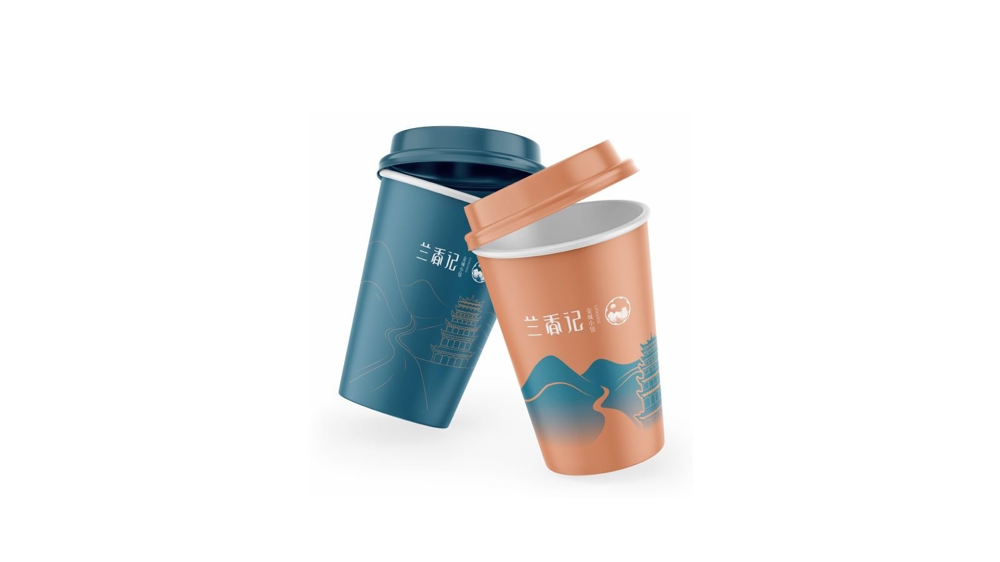
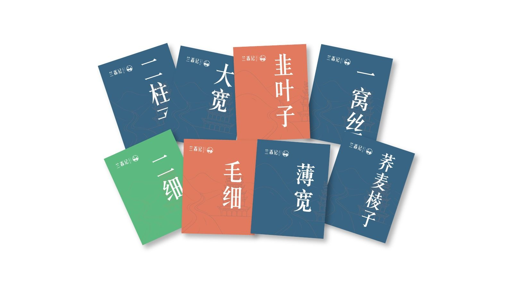